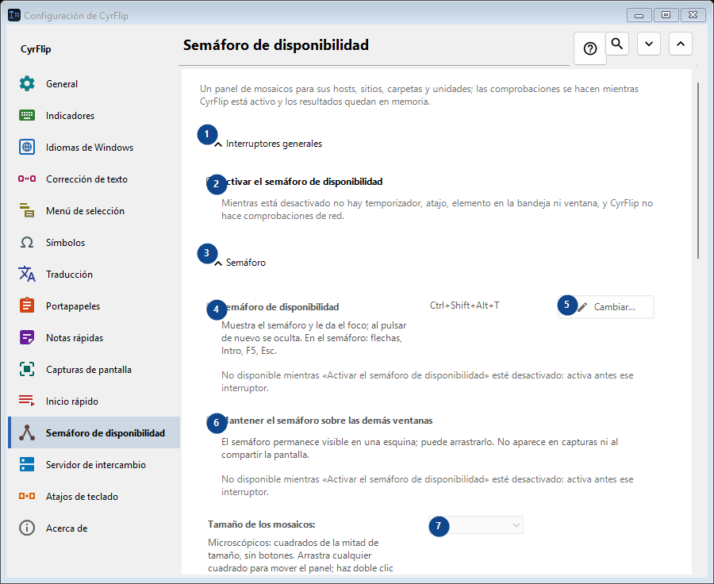
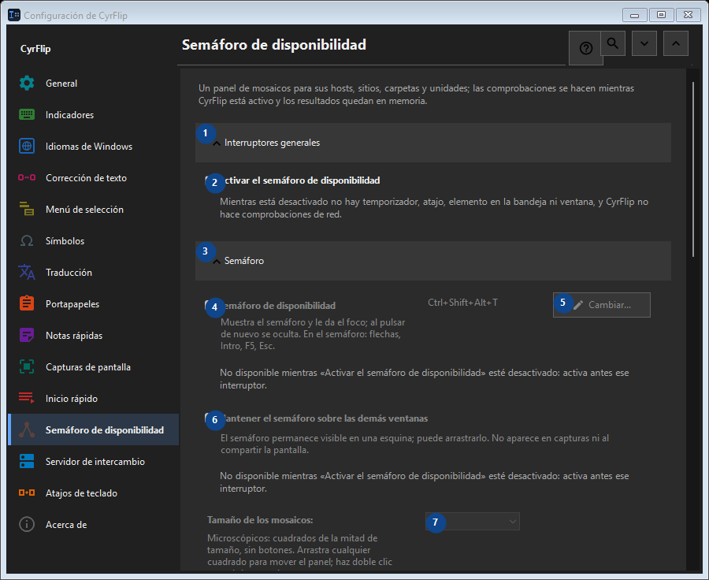

Semáforo de disponibilidad
Para qué sirve
Un panel de mosaicos para sus hosts, sitios, carpetas y unidades; las comprobaciones se hacen mientras CyrFlip está activo y los resultados quedan en memoria.


Orden de uso
Los ajustes se aplican de inmediato. No hay un orden obligatorio; usa los grupos siguientes.
Elementos
1. Interruptores generales
Usa este comando para la acción indicada. Lee cualquier confirmación antes de aceptarla.
Tus atajos2. Activar el semáforo de disponibilidad
Mientras está desactivado no hay temporizador, atajo, elemento en la bandeja ni ventana, y CyrFlip no hace comprobaciones de red.
Tus atajos3. Semáforo
Usa este comando para la acción indicada. Lee cualquier confirmación antes de aceptarla.
Tus atajos4. Semáforo de disponibilidad
No disponible mientras «Activar el semáforo de disponibilidad» esté desactivado: activa antes ese interruptor. Este elemento no está disponible. Activa primero la función o selecciona una entrada.
Tus atajos5. Cambiar - Semáforo de disponibilidad
No disponible mientras «Activar el semáforo de disponibilidad» esté desactivado: activa antes ese interruptor. Este elemento no está disponible. Activa primero la función o selecciona una entrada.
Tus atajos6. Mantener el semáforo sobre las demás ventanas
No disponible mientras «Activar el semáforo de disponibilidad» esté desactivado: activa antes ese interruptor. Este elemento no está disponible. Activa primero la función o selecciona una entrada.
Tus atajos7. Tamaño de los mosaicos
No disponible mientras «Activar el semáforo de disponibilidad» esté desactivado: activa antes ese interruptor. Este elemento no está disponible. Activa primero la función o selecciona una entrada.
Tus atajos8. Columnas
No disponible mientras «Activar el semáforo de disponibilidad» esté desactivado: activa antes ese interruptor. Este elemento no está disponible. Activa primero la función o selecciona una entrada.
Tus atajos9. No disponible mientras «Activar el semáforo de disponibilidad» esté desactivado: activa antes ese interruptor.
Elige o introduce el valor de la etiqueta contigua. Revísalo antes de continuar. Este elemento no está disponible. Activa primero la función o selecciona una entrada.
Tus atajos10. Transparencia de la ventana del semáforo
No disponible mientras «Activar el semáforo de disponibilidad» esté desactivado: activa antes ese interruptor. Este elemento no está disponible. Activa primero la función o selecciona una entrada.
Tus atajos11. Mostrar el semáforo
No disponible mientras «Activar el semáforo de disponibilidad» esté desactivado: activa antes ese interruptor. Este elemento no está disponible. Activa primero la función o selecciona una entrada.
Tus atajos12. Objetivos
Usa este comando para la acción indicada. Lee cualquier confirmación antes de aceptarla.
Tus atajos13. Dirección
No disponible mientras «Activar el semáforo de disponibilidad» esté desactivado: activa antes ese interruptor. Este elemento no está disponible. Activa primero la función o selecciona una entrada.
Tus atajos14. Añadir
No disponible mientras «Activar el semáforo de disponibilidad» esté desactivado: activa antes ese interruptor. Este elemento no está disponible. Activa primero la función o selecciona una entrada.
Tus atajos15. Detalles...
No disponible mientras «Activar el semáforo de disponibilidad» esté desactivado: activa antes ese interruptor. Este elemento no está disponible. Activa primero la función o selecciona una entrada.
Tus atajos16. Comprobar todo ahora
No disponible mientras «Activar el semáforo de disponibilidad» esté desactivado: activa antes ese interruptor. Este elemento no está disponible. Activa primero la función o selecciona una entrada.
Tus atajos17. Historial de cambios
Usa este comando para la acción indicada. Lee cualquier confirmación antes de aceptarla.
Tus atajos18. Abrir el archivo del historial
No disponible mientras «Activar el semáforo de disponibilidad» esté desactivado: activa antes ese interruptor. Este elemento no está disponible. Activa primero la función o selecciona una entrada.
Tus atajos19. Mostrar en la carpeta
No disponible mientras «Activar el semáforo de disponibilidad» esté desactivado: activa antes ese interruptor. Este elemento no está disponible. Activa primero la función o selecciona una entrada.
Tus atajos20. Borrar el historial...
No disponible mientras «Activar el semáforo de disponibilidad» esté desactivado: activa antes ese interruptor. Este elemento no está disponible. Activa primero la función o selecciona una entrada.
Tus atajos